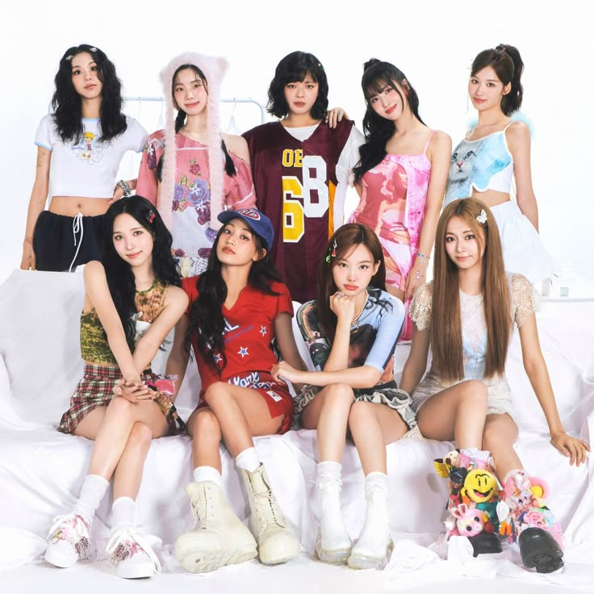
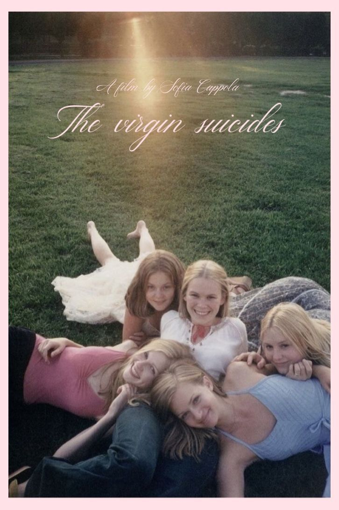

Over mij
Hey ik ben Ece.Ik ben jarig op 2 december. Ik ben 15 jaar oud. Ik kom uit Turkije en ik ben al in België voor bijna 2 jaar. Ik ben echt slecht in sporten. Maar ik hou van tekenen,movies kijken en lezen. Ik heb een kleine zus, zij is 10 jaar oud.
Top drie vakken
- Engels
- Beeldverwerking
- Nederlands
Top drie eten
- Sarma(turkse eten)
- Chicken Alfredo
- Tantuni(turkse eten)
Ik hou van dieren ook. Mijn favorite dier is een girafe. Ik wil echt een huisdier hebben. Maar mijn moeder laat mij nier. Ik wil een kat. Ik ben bang van honden.
Hier is mijn favorite liedje:
HomesickDit is mijn favorite muziek groep:

Hier is TWICE!!In 2015 maakte ze hun debuut.Ze zijn met negenen en hun namen zijn Chaeyoung, Dahyun, Jeongyeon, Momo, Sana, Mina, Jihyo, Nayeon en Tzuyu. Mij favorite persoon in TWICE is Chaeyoung. Ze maakte onlaangs haar solo-debuut met het album LIL FANTASY vol.1. Als u wilt het luisteren, hier is de link.
Ik hou van filmpjes kijken. Mijn favorite film is "the virgin suicides".De film gaat over het leven van vier zussen. Helaas plegen ze aan het einde allemaal zelfmoord.

ik HOU van lezen.Ik ben onlangs begonnen met een nieuw boek. De Engelse titel van het boek is "Heaven". Het verhaal gaat over een meisje en een jongen die gepest worden op school en troost bij elkaar vinden.

Mijn favoriete serie is "Paradise Kiss". Het is een leuke anime over mode. Ik ben het nog niet uit, maar door de tekeningen en de stijl is het nu al mijn favoriet.

Ik hou heel erg van bakken. Ik maak echt lekkere taarten die nat en luchtig zijn.Mijn chocolade cakes zijn de allerbeste. Ik probeer graag nieuwe recepten uit. Soms is het een grote mislukking, maar bakken is heel leuk. Tot nu toe was het moeilijkste om koekjes te maken.:(